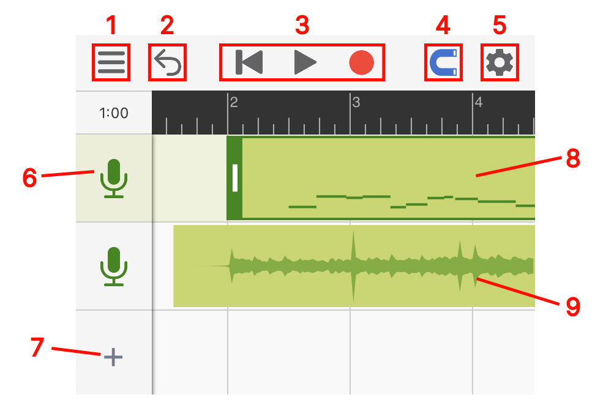
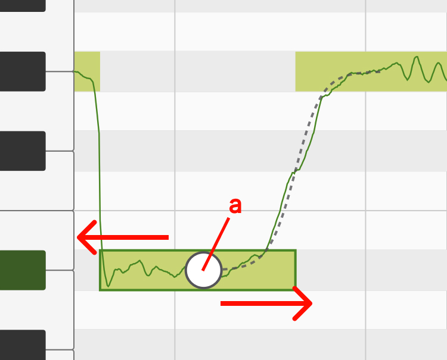
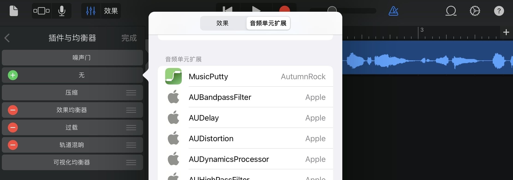
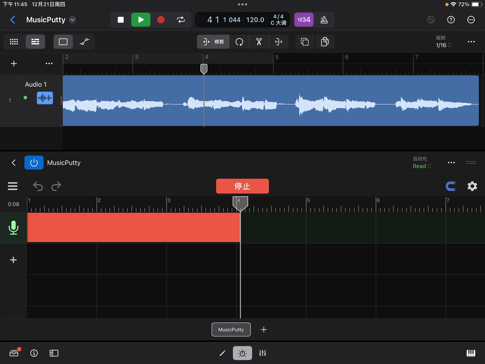

操作指南
音乐黏土是一款强大的音高编辑工具。当使用音乐黏土录歌时，程序会通过算法分析人声的音高，并且允许用户对每一个音符的音高进行修改。音乐粘土在拥有强大功能的同时也拥有简单的界面和清晰的流程指引，用户只需要了解了下面两个程序页面便可轻松使用。
工程页面
打开程序后，用户最先看到的是工程页面。在工程页面下用户可以添加音轨、录制人声并摆放已经录好的片段。

1
菜单: 这里有保存，读取和导出按钮。
2
撤消: 使用此按钮可以撤消对工程文件所做的更改。在较小的屏幕上运行时，长按撤消按钮会出现恢复按钮。其它时候，恢复按钮会出现在撤消按钮旁边。
3
指针重置，播放，录音。
4
对齐网格: 点亮后所拖动的东西会自动对齐网格。
5
设置: 这里有节拍器、速度、拍子记号和实时监听的设置。
6
音轨图标: 点一次会选中此音轨，点两次可以打开音轨的设置面板。每个音轨的设置面板里都包含常见的声道控件，例如静音/独奏，音量和声场定位。同时也可以在这里改变音轨的颜色。

7
添加音轨: 点这里可以添加空音轨、伴奏音频或把人声音频文件导入进音乐黏土中分析并修改。（“导入第三方人声音频”的功能需要解锁专业版本）
8
人声音频: 人声音频上的微型图展示了音频里所有的音符，双击人声音频可以进入音高编辑页面。
9
伴奏音频: 伴奏音频会以声波图的形式显示在界面上。
音高编辑页面
在音高编辑页面里你可以对每一个音符的音高进行修改。（通过双击人声音频来打开该页面）

1
有调音符: 方形的轮廓代表音符的大致音高。轮廓里的线条代表了在每一时刻的精准音高。
2
无调音符: 没有线条的浅色音符代表无音调的声音，这些声音可以是呼吸，混响或环境噪音。
3
主工具: 用来调整音符的音高和音符的起始时间。
4
音符分离工具: 用来切分或合并音符。

4.a
位置标记: 移动它到你需要切割的位置，到位后点击位置标记（或者上拉）即可把当前音符一分为二。
4.b
合并按钮（左）: 点击此处可以让当前音符和左边的音符合并。
4.c
合并按钮（右）: 点击此处可以让当前音符和右边的音符合并。
5
颤音工具（专业版功能）：使用此工具可更改每个音符中的颤音幅度。选择颤音工具后，你可以在所选音符上向上拖动以放大其颤音或向下拖动以拉平其颤音。

6
连音工具（专业版功能）：选择了连音工具后，单击音符将出现一个连音拖扭。用户可通过拖动此拖钮来更改音高在两个音符之间过渡的速度。

6.a
连音托扭: 如需让两个音符之间的过渡变慢，将这个手柄向左拖动，如需让过渡更快，则将手柄向右拖动。
7
声线工具（专业功能）：此工具可以用来改变人声的声线。此处声线代表的是人声信号在频谱上的大致形状。体型较大的歌手通常会发出低沉的声音（能量集中在较低频率的频谱）。另一方面，身体较小的歌手通常声音更明亮（能量集中在更高的频率上）。使用声线工具，你可以通过重塑人声在频谱上的能量分布来创造新奇的效果。

7.a
声线块： 选择声线工具后，每个音符上都会出现一个透明的方块。可通过向上或向下拖动此透明方块以更改音符的声线。
插件模式
随着2.0版本的发布，音乐黏土现在可以作为AUv3插件加载到用户的音频工作站（DAW）中。这意味着在制作歌曲时，用户将无需在DAW和音乐黏土之间反复导入和导出音频。现在用户可以直接在DAW的界面中使用音乐黏土的音高编辑工具。
在音频工作站（DAW）中载入音乐黏土
当在DAW内录制好人声后，用户可以将音乐黏土（MusicPutty）以插件效果器的形式添加到人声音轨上。以下截图展示了在库乐队中如何操作。有关加载插件的说明，请参考DAW的用户手册。

当把音乐黏土添加进一条效果器链时，请将音乐黏土摆放在靠近效果器链开头的位置。在其前面应该只有用于清理信号的效果器，例如噪声门或其它降噪插件。这样可以确保音乐黏土能够捕捉到原始的干声信号，为以后添加其它效果器留下更多可操作的空间。
选择如何保存插件数据
每当用户打开一个新的音乐黏土实例时，插件会提示用户选择数据的存储位置。这里有两个选项：将数据保存在宿主的工程文件中或将其保存在另一个本地“.mputty”文件中。音乐黏土推荐使用第一个选项，将数据保存在宿主的工程文件中。这样当用户把作品拷贝到另一个设备上时，用户只需要移动宿主的工程文件。如果选择第二个选项，那用户在拷贝宿主工程文件的同时也需要记得拷贝所有作品中用到的“.mputty”文件。请注意，除Cubasis外，大部分主流DAW都支持第一个选项。如果你在使用Cubasis，请选择第二个选项。

从音频工作站（DAW）中捕捉音频
在音乐黏土能够处理用户的人声之前，它需要先从宿主中捕捉到人声的音频。首先，点击“捕捉音频”按钮让音乐黏土进入音频捕捉模式。接着，将宿主的播放指针放置到人声音频的开头，然后按下宿主的播放按钮。随着人声音频“流过”音乐黏土所在的效果器链，音乐黏土会将这些音频数据保存在其文件中。当捕捉到所有内容后，请点击“停止”按钮。

点击“捕捉音频”按钮让音乐黏土进入音频捕捉模式。

将宿主的播放指针放置到人声音频的开头，然后按下宿主的播放按钮。当捕捉到所有内容后，请点击“停止”按钮。

音乐黏土会自动分析被捕捉音频的音高，分析完成后就可开始调音了。
在不同音频工作站（DAW）中需要注意的事项
当一个iOS上的音频插件需要和它的宿主进行交流时，程序之间会使用一个叫做Audio Unit v3（AUv3）的协议进行沟通。虽然大部分宿主都表明自己支持AUv3协议，但在实践中，每个宿主的对AUv3协议的解读都略有不用。因此针对不同宿主，这里有一些需要提前了解的注意事项。
库乐队 & Logic Pro
库乐队和Logic Pro对何时一个效果器能够输出音频设有严格的限制。如果宿主在它的一个音轨上没有看到任何音频，宿主会自动停止该音轨上的所有效果器。这就意味着当你在音乐黏土中移动或导入音频时，你必须确保该音频同时也存在于宿主的时间轴上，并被放在相同位置。否则，宿主可能会误以为当前播放指针所处的位置没有任何东西需要播放，并停止从音乐黏土中调取音频。
Cubasis
在Cubasis中，当音乐黏土提示用户选择数据存储位置时，请务必选择“保存在另一个本地文件中”。目前由于Cubasis的设计中存在的一些限制，其系统只支持10MB以下的插件存档。我们已经向Cubasis团队传达了这个问题，并将继续与他们沟通，希望未来可以找到一个更好的解决方案。
Auria & Auria Pro
当前Auria的导出功能中存在一个Bug。导出时，Auria不会按照AUv3协议的要求给其插件提供宿主的指针信息，导致任何需要指针信息的效果器都无法在Auria上正常导出。想要绕过这个问题，请首先使用音乐黏土的内置导出功能将其项目导出为音频文件，并将导出的音频文件放置到Auria的音轨上。然后，在导出Auria工程前，静音所有音乐黏土的插件实例。我们已经向Auria 团队传达了这个问题，并将继续与他们沟通，希望未来可以修复这个问题。
N-Track Studio
N-Track Studio有时会向插件提供不准确的指针信息。在N-Track Studio里捕捉音频时，请将音乐黏土的音频捕捉模式设置为“兼容模式”。否则，音乐黏土可能会将那些不准确的信息解读为宿主播放指针的跳跃，并导致其过早停止音频捕捉。